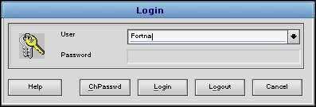

on the FortnaPlus© screen.
It will appear automatically as needed, as well, such as when the program first starts.
on the FortnaPlus© screen.
It will appear automatically as needed, as well, such as when the program first starts.
Login Menu
Use this menu to control access to the FortnaPlus© system. You can log in, log out, or to change to a different security level. You can also change your password here.
You can get this Menu by clicking the Key icon on the FortnaPlus© screen.
It will appear automatically as needed, as well, such as when the program first starts.
UserSelect a User name from the pull-down list, or enter another one. PasswordEnter the password associated with User. Asterisk characters will appear for each character you type, to protect your password from prying eyes. HelpClick the Help button to get this help message, but you already knew that. ChPasswdClick the ChPasswd button to change the password associated with the current User. Another Menu will appear. You must provide the current password. Once the current password is successfully entered, you must type the new password twice. LoginClick Login to submit the User and Password you have typed. The Enter key has the same effect. LogoutClick Logout to move to the lowest security level, but allow FortnaPlus© to continue to run. Most of the buttons and menus will become inaccessible. Click the Key icon CancelClick Cancel to retain the current Login and security level, and close the Login Menu. |
 |
Copyright © 2001 Fortna Inc. All rights reserved.